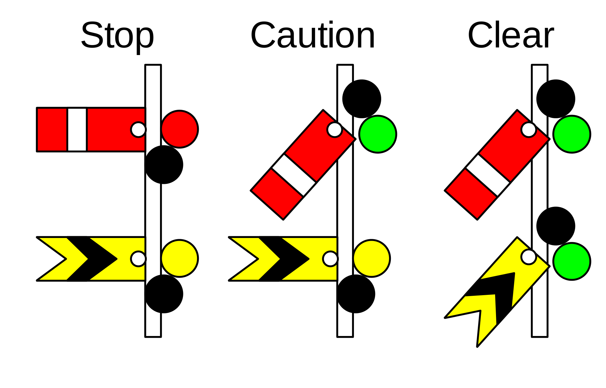
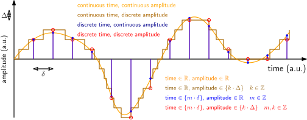
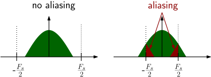
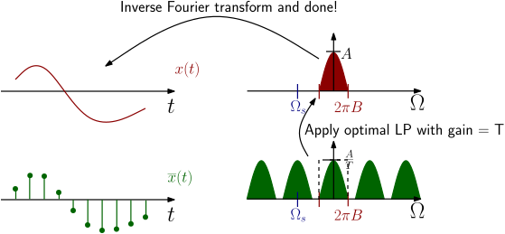

22051
Signals and Systems in Discrete Time
Lecture 1
Terminology, classification, and discretization of signals
Bastian Epp
What is going to happen today
- Some examples of signals
- Signals as sums of sinusoids (real- and complex valued)
- Signal periodicity
- Basic system
- Continuous versus discrete-time signals
- Analogue-digital / digital-analogue (AD/DA) conversion
- Aliasing
Signals
Reading: Introductory chapter
What is a signal?
A signal is...
-
An indicator, such as a gesture or colored light, that serves as a means of communication

- An impulse or a fluctuating electric quantify, such as voltage, current, or electric field strength, whose variations represent coded information.
- The sound, image, or message transmitted or received in telegraphy, telephony, radio, television, or radar.
Examples of signals
In time, frequency, time-frequency, manipulated...
Classification of signals
...we will deal with discrete-time, discrete-amplitude signals...

Description of signals
In mathematical terms as a sum of sinusoids
\[x_a(t) = \sum_{k=0}^\infty A_k \cdot \cos(2\pi k F_0 t + \Theta _k) \]Or as a complex exponentials
\[ x_a(t) = \sum_{k=0}^\infty c_k e^{j 2 \pi k F_0 t + \Theta _k} \]Check out the screencast on DTU LEARN
Description of signals
Complex exponentials
\[ x_a(t) = \sum_{k=0}^\infty c_k e^{j 2 \pi k F_0 t + \Theta _k} \]
Signals are periodic with period $$ 1/F_0 $$
A signal and a system
It's all about processing some signal thorugh some system
The most general description of what happens in signal processing
A signal and a system
It's all about processing some signal thorugh some system
...more on that in lecture 2!
Sampling
What do we do when we "sample" a signal?
What do we do when we "sample" a signal?
Formal definition
Discretization of a continuous signal along one (or more) dimensions by taking a defined number of observations along the sampling dimensions.
A more comprehensive definition
Discretization of a continuous signal by picking single values at defined values of the sampling dimension. This could be time (audio signal), space (geophysics) or temperature (meterology).
What do we do when we "sample" a signal?
A more comprehensive definition
Discretization of a continuous signal by picking single values at defined values of the sampling dimension. This could be time (audio signal), space (geophysics) or temperature (meterology).
Sampling along one dimension
Temporal sampling
- Definition of a sampling rate (or sampling frequency, e.g., in 1/s = Hz)
- Samples are taken at equal intervals (sampling period)
How low should we go to capture the signal?
How many samples to use?
The Nyquist frequency
The frequency limit of a discrete signal with a given sampling rate $(f_s)$ is called the Nyquist frequency $(f_N)$: \[ f_s = 2 \cdot f_N \] or \[ f_s/2 = f_N \]
Implications for sampling of continuous signals
A frequency of $f_{sig}$ to be sampled with a sampling frequency of $f_s$ must be smaller than the Nyquist frequency: \[ f_{sig} < f_N \leftrightarrow f_s > 2 \cdot f_{signal} \]
Let's do the math! Sampling!
The time-continuous signal $x(t)$ with the Fourier transform $X(\Omega)$
\[X(\omega) = 0 \ \ for \ \ |\Omega| > 2 \pi B \]
Sampling of $x(t)$ by multiplication with a delta-pulse train $\delta_T(t)$
\[ \delta_T(t) = \sum_n \delta(t-nT) \ \ with \ \ T= 1/f_s, n \in \mathbb{Z} \]
Yields the sampled function $\overline{x}(t)$
\[ \overline{x}(t) = x(t) \cdot \delta_(t) \]
Or as sum of discrete values at intervals $nT$ (all others are 0)
\[ \overline{x}(t) = x(t) \cdot \delta_T(t) = \sum_n x(nT)\delta (t-nT) \ n \in \mathbb{Z} \]
Let's do the math! Sampling!
Rewritten as a Fourier series:
\[ \overline{x}(t) = x(t) \cdot \delta_T(t) = x(t) \cdot \frac{1}{T} [1 + 2\cos (\Omega_s t) + 2 \cos (2 \Omega_s t) + \dots ] \]
...and re-organized for improved readability
\[ \overline{x}(t) = \frac{1}{T} [x(t) + \sum_{n=1}^\infty x(t) \cdot 2 \cos (n\Omega_s t)] \]
Let's do the math! Sampling!
\[ \overline{x}(t) = (t) \cdot \delta_T(t) \]
In the light of the Fourier transform
\[\begin{aligned} \overline{X}(\Omega) & = X(\Omega) \ast \mathcal{F}(\delta_T(t)) \\ & = \frac{1}{T} [ \sum_{n=-\infty}^\infty X(\Omega - n \Omega_s) ] \end{aligned} \]
...this means that digital spectra are periodic!
Aliasing
...frequencies that are (not) there...
Frequencies that are (not) there: Aliasing
- At a given sampling frequency $F_s$, the Nyquist frequency $F_N$ is $F_s/2$
- Any component $[-F_s/2, F_s/2]$ gets 'folded back' into the interval $[-F_s/2, F_s/2]$
⇨ The frequency outside the interval gets identified as a lower frequency - it gets an 'alias'
Frequencies that are (not) there: Aliasing
Or in the audio domain
Reconstruction (ideal)
How to get back to the "analogue" signal once we sampled?
...just get rid of what we don't want (filtering!)
Let’s do the math: Reconstruction (ideal)
Frequency domain: Ideal low pass (LP) with gain $T$ and bandwidth $B$ \[ H(\omega) = T \cdot rect \left( \frac{\Omega}{4\pi B} \right) \]
This look in the time domain like a sinc with amplitude $2BT$ and zeros at $\pm \frac{n}{2B}$ \[ h(t) = 2BT \cdot sinc (2\pi B t) \ \ T = \frac{1}{f_s} \]
In the ideal world where we can chose the sampling frequency equal to the bandwidth \[ f_s = 2B \Rightarrow h(t) = sinc (2\pi B t) \]
..so basically every "pulse" gets a sinc on top and the signal will reconstruct!
Some practical considerations
...the world is not ideal...
Some practical considerations
- Neither perfect $\delta$ pulse nor ideal LP filter exist in reality
- Save to increase 'margin' to Nyquist frequency by 'oversampling'
- Chose sampling frequency to be (much) larger than twice the bandwidth
- Signals might include frequencies the definitely violate the sampling theorem (aliasing)
- Remove frequency components before (!) sampling of the signal
- Anti-aliasing filter is your friend (e.g. in EEG applications)
Bandwidth and minimum sampling rate
Aliasing
Hands-on for today
...what you will discover today...
Hands-on for today
- Signal generation and sampling
- Visualization of signals
- Sound in- and output from wav files
- Resampling of signals using built-in routines
Summary and take-home
...to take with you from here...
What just happened
- The maximum frequency that can be represented in a sampled signal corresponds to half the sampling frequency (Nyquist frequency)
- A bandlimited function can be perfectly reconstructed if the bandwidth is within the limits of the Nyquist frequency (no aliasing)
- In practice, the sampling rate should be much larger than the Nyquist frequency
- Anti-aliasing filters can be handy when (down-)sampling